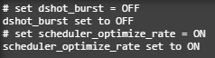

Betaflight 4.1 + RPM Filter Anleitung: Crazybee F4Pro
Betaflight Configurator
Es muss Version 10.6 oder höher installiert sein.

Den bekommt man unter:
https://github.com/betaflight/betaflight-configurator/releases
Betaflight Version 4.1
Zum flashen der Firmware muss der FC in den DFU Modus, dazu entweder in die CLI "BL"
eingeben, oder den Bootbutton auf dem FC beim Einstecken gedrückthalten.
Dann soll anstelle des Ports im Configurator DFU stehen. Falls das nicht funktioniert kann man
noch den ImpulseRC DriverFixer
versuchen.
Als Target wird CRAZYBEEF4* (HAMO) gewählt. In diesem Fall FR für die FrSky Version von dem
Board.
HAMO ist die neue Bezeichnung für die Konfiguration die automatisch geladen wird, Legacy gibt es
nur, weil es schon ein spezielles Target für den FC gab, das wird aber nicht weiter fort
geführt.
Die ausgewählte Firmware kann automatisch online heruntergeladen werden und dann geflasht.

War das Flashen erfolgreich, so wird nach dem erneuten Verbinden die neue Version oben rechts
angezeigt.

Ports
Im Ports Tab wird nur der Port für den VTX eingestellt, ausser ihr habe noch einen externen
Empfänger verbaut.

In den meisten Fällen ist ein SmartAudio VTX verbaut, daher wählt man VTX (TBS Smart Audio).
Selten kommt auch der VTX (IRC Tramp) vor.
*Falls ein neuer Empfänger auf dem UART2 liegt muss hier bei Serial RX der Schalter gesetzt
sein.*
Configuration
Im Mixer rate ich dazu mit reversed Props zu fliegen, es kann bei Washouts helfen und hat auch
algemein mehr Vor-als Nachteile. Dementsprchend muss auch die Motordirection im BLHeli
eingestellt sein
Bei den ESC/Motor Features wird DSHOT300 als Protokoll gewählt. Und für den RPM Filter muss
Bidirectionale DShot aktiviert sein. Fast alle kleinen Motoren 06xx-14xx haben 12 Magneten,
größere Motoren in der Regel 14. Die 12 muss unbedingt eingestellt sein, sonst führt das zu sehr
vielen Fehlern. Den Idle Value passt man ans eigene Gefühl und die Leistung an.

Gyro und PID Loop werden auf 4kHz eingestellt, 8kHz schaffen nur einige F7 MCUs, dann stellt man
auch DShot600 ein, bei einem F4 ist auf 4kHz Schluss.

Bei der Board Ausrichtung gibt es eigentlich nichts einzustellen, nur kontrollieren ob der Gyro
auch um 90° gedreht ist.
Beim Arming macht es Sinn den maximalen Winkel auf 180° zu stellen, das bedeutet, der Copter
kann auch auf dem Kopf gearmt werden. Ist für Turtle nicht mehr relevant, aber wenn man mal im
Baum steckt kann es sehr hilfreich sein.

Für den internen Empfänger wird der Mode auf SPI RX support gestellt, das Protokoll ist in der
Regel FRSKY_D für FrSky, das steht für den D8 Modus, dieses kann man auch mit einer LBT
Steuerung binden, nachdem bei dieser der D8 freigeschaltet wurde.

Die anderen Settings lassen wir unangetastet, sollte daher so aussehen:
Power&Batterie
Als Quellen wird der Onboard ADC gewählt. Es macht Sinn die Minimum und Warning Voltage etwas an
zu passen. Vor allem wer keinen XT30 verwendet hat niedrigere Spannungen zu erwarten. Maximum
Voltage sollte bei 4.4V sein, denn sonst wird ein HV oft falsch erkannt.
Die Scale ist meist etwas zu niedrig, daher machen 111 mehr Sinn. Der Amperage Meter ist mit
1205 eigentlich richtig kalibriert.
Video Transmitter
Die Einrichtung des VTX wurde mit BF4.1 komplizierter. Um besser mit den Zahlreichen Versionen
umgehen zu können wird die, zu dem VTX passende Konfiguration nun manuel geladen.
Diese findet man hier: https://github.com/betaflight/betaflight/wiki/VTX-tables
Alternativ lädt man meine
Version herunter. Bei dieser sind so wohl alle Frequenzen als auch alle Sendeleistungen
entsperrt, weswegen sie nicht legal in DE genutzt werden kann.
Die entsprechende Konfiguration wird dann mit "Load from file" geladen, für den Trashcan VTX und
die meisten anderen wird die SmartAudio V2.0 verwendet. Die 2.1 kommt erst ab dem Nano32 Pro zum
Einsatz.
Nachdem Laden der Konfiguration sollte die Tabelle und die Powerlevel eingerichtet sein. Es
macht dennoch Sinn die Leistung auf maximal 2 Power Level also 24mW zu begrenzen. Mehr führt vor
allem bei den kleinen Coptern noch schneller zum Überhitzen und wird die Antenne beschädigt
steigt mit steigender Leistung die Wahrscheinlichkeit den VTX zu beschädigen. Die Reichweite ist
ohnehin durch andere Faktoren viel stärker beschränkt.
CLI
In der CLI wird nur sicher gestellt, dass dshot_burst deaktiviert und scheduler_optimize__rate
aktiviert ist.
set dshot_burst = OFF
set scheduler_optimize__rate = ON
Diese Settings sollten mit BF4.1 eigendlich standart sein.
Danach mit "save" speichern.

PIDs
Meiner Erfahrung nach brauchen die kleinen Copter einen recht hohen D relativ zum P. Ein hoher I
führt schneller mal zu Problemen, denn im Wind halten sich die Kleinen ohnehin nicht gut. Wer
aber nur Angle oder Horizon fliegen will, kann den I noch weiter senken, denn die Stength vom
Angle ersetzt den I quasi.
Den FF lasse ich fast unangetastet, ohne BBLogs kann ich leider nicht genaueres zu den PIDs
sagen, diese Werte sind von mir auf meinem Copter erflogen und sollen als Richtwert
dienen.
Bei den weiteren Settings ist auch nicht Alles für Jeden geeignet. Desto schwächer der Copter
umso mehr Sinn macht der Throttleboost. Absolute Control und FF Transition sind Geschmackssache.
Vbat PID Compensation ist bei den 1S und 2S aber noch wichtiger als bei großen Coptern.
Ansonsten ist nur noch der D Min wichtig, hier ist ein Advance überflüssig, den Gain runden wir
auf 30 auf. In Kombination mit den relativ hohen D Werten sollte das zu einem möglichst direkten
Flugverhalten führen. Der Advance steigert den D auf Grund von Setpoint, während hingegen der
Gain ihn vom Gyro abhängig macht. Das bedeutet, der Gain setzt etwas später ein, was die
Initialbewegung weniger stark dämpft, sofern nicht zuviel Power vorhanden ist, für das zu einem
direkteren Flugverhalten.
Weil die kleinen Copter nicht so schnell werden und auch nicht so stark beschleunigen können,
dürfen die PIDs auch bei hohem Gas länger stärker bleiben.
Daher wird der TPA auf 0,60 gesetzt und der Breakpoint auf 1700.

Filter
Bei den Filtern wird es nun dank der neuen Slider ganz einfach. Diese werden beide auf 1.4
gesetzt um die Verzögerung möglichst gering zu halten. Entweder sind 11xxer Motoren verbaut, die
nie heiß werden, oder die miesen kleineren 06/07/08xx Motoren, die brennen sowieso
immer.
Bei dem RPM und Dynamischen Filter gibt es etwas mehr einzustellen. Die Harmonics bleiben auf 3,
2 hat keine relevanten Vorteile was die Verzögerung angeht und 1 ist viel zu aggressiv. Die
Frequenz belässt man auf 100hz.
Beim Dynamischen wird die Range auf Medium gesetzt, in den meisten Fällen drehen die kleinen
Motoren recht schnell, weswegen sie auch mit leichten Props geflogen werden. Die Width wird auf
0 gesetzt, der Q Faktor auf 250 und die Minimale Frequenz auf die der gehen soll auf 100Hz.
Darutner herscht soviel Chaos, da verirrt der sich nur und schießt sicht auf was falsches
ein.
jflight.net/
Um RPM Filter auf einem BLHeli_S ESC nutzen zu können bedarf es zur Zeit noch besonderer
Software. Hier gibt es freie und kostenpflichtige Angebote. Ich gehe nur auf JESC ein, welche
mit ~5€ für einen 4in1 ESC auch nicht teuer sind. Dafür erspart man sich gegenbüber der
kostelosen Angebote einige Arbeit und der extra für diesen Zweck vorgesehene JESC Configurator
kann beim ersten mal verhindern, dass eine falsche Firmware aufgespielt wird, denn dieser kann
die installierte FW analysieren und das Target auf seine Richtigkeit prüfen. Spielt man
versehentlich eine falsche Version auf, weil wohlmöglich der Hersteller sein Target falsch
benannt hat, kann dies im schlimmsten Fall umgehend zum Tod des ESCs führen, aber eher ist mit
einem Überhitzen oder zu geringer Leistung zu rechnen. Ausserdem sucht der
JESC Configurator automatisch die ausgewählte Firmware heraus und erspart manuelles Suchen und
Herunterladen.
Die Lizenzen für die ESCs können im jflight Shop erworben werden: https://jflight.net/
Hier ist auch die gesammte Installation genaustens beschrieben.
JESC Configurator
Für den Vorgang wird die neuste Version vom JESC Configurator benötigt, diesen kann man hier
herunterladen: https://github.com/jflight-public/jesc-configurator/releases
JESC
Zu den Settings hat sich nichts verändert zu dem regulären BL_HeliS. Die Startup Power setze ich
auf 1.50 was soviel bedeuted, wie der Motor darf zum Anlaufen soviel Leistung nutzen wie ihm zur
Verfügung steht, das kann bei Washouts helfen. Zeitgleich soll die LOW RPM Power Protection
verhindern, dass ein blockierter Motor den ESC überlastet.
Die Demag Compensation hat bei den kleinen Motoren ohnehin keinen echten Einfluss, einfach auf
Low lassen.
Das MotorTiming kann dem Motor etwas mehr Leistung zukommen lassen, Desyncs vorbeugen aber auch
zu mehr Hitze führen, MediumHigh ist ein guter Wert.
Unten Links ist ein Menu über das man die verschiedenen Operationen starten kann.
Zum Flashen der Firmware wird der richtige ESC ausgewählt, dieser wird automatisch aus dem
vorinstallierten Target gelesen. Ist dieses Target falsch benannt, kann der JESC Configurator
jetzt noch den Fehler erkennen und darauf hinweisen, ist erstmal das falsche Target geflasht, so
kann auch der Configurator das nicht mehr erkennen. Für den CrazyBeeF4 ist die S-H-50 richtig.
Als Version wird die neue 2.2 48kHz gewählt. Die 2.2 ist stabil und die 48kHz Variante bringt
gegenüber der 24kHz einen teilweise großen Gewinn an Flugzeit.
Danach sollte man die ESCs lizensieren um die Telemetry nutzen zu können. Hat die Lizenzen
erworben können über License All, alle aktivieren. Danach kann die Telemetry geflasht werden,
hierzu wird Flash All Telemetry gewählt und im Dialog wählt man wieder S-H-50 für den CrazyBeeF4
sowie den neusten DShot Telemetry Service 2.1.
Sind alle ESCs geflasht und Lizensiert sollte es so aussehen:
Eventuell muss noch die Motordirection angepasst werden.F
Tests
Abschließend muss noch getestet werde, ob der RPM Filter arbeitet und der FC alles
mitbekommt.
Hierzu mal in die CLI "tasks" eingeben und den PID/Gyor Wert überprüfen, dieser sollte bei der
ersten Anfrage sehr nah an dem eingestellten Wert von 4kHz liegen.
Hier zu sehen ist der Wert bei 4004.
Dann muss noch geprüft werden, ob bei der Kommunikation Fehler auftreten, hier ist kein größerer Wert als 0% akzeptable.
Im Motortab alle Motoren anlaufen lassen und den E Wert beobachten, bleibt dieser nicht auf 0% hat etwas nicht funktioniert. In diesem Fall nochmal alles überprüfen und ggf. von Vorne beginnen. Sollte auch nach mehreren Versuchen es nicht funktionieren ist entweder die ESC Firmware falsch, oder es liegt ein anderer Defekt vor.
Ist aber bis hier hin alles glatt gelaufen, sollte der Copter nun erfolgreich mit BF4.1 und RPM Filtern unterwegs sein.
Guten Flug!